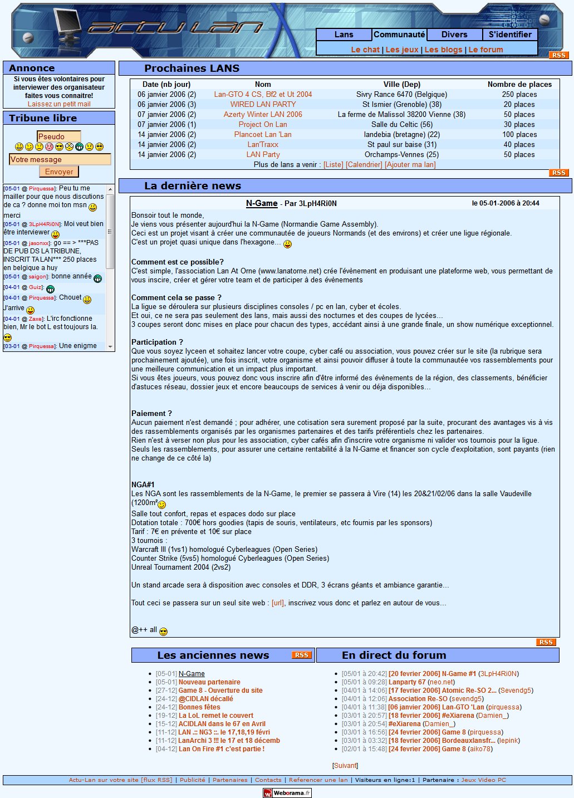

The end
Voilà des mois que je vous l'avais annoncé, je vais arrêter de payer le serveur dédié pour le site. Actu-Lan.com ferme donc après des siècles d'activité, d'actualité, de formation des débutants, de milliers de photos, des millions de structures, des milliards d'évènements et bien plus encore !
J'ai passé beaucoup de temps à créer et gérer ce site avec une communauté unique, ce fut un plaisir et un tremplin dans ma vie, faire cette page est un crève coeur. Je vous remercie tous pour tous ces moments et votre implication.

La V2 en 2006

La V3 en 2006 - 2007
La V4 plus tard !
RIP Actu-Lan.com (Mars 2005 - Mai 2021)
N'hésitez pas à me laisser un petit message sur Twitter si vous faites parti de ceux qui passent encore ici et qui on pris le temps de lire cette dernière page :)
Enfin, un petit espoir perdure de revoir Actu-Lan dans le futur, peut-être que le phenix reviendra...
Actu-Lan version 6.6.1 - The last ?!